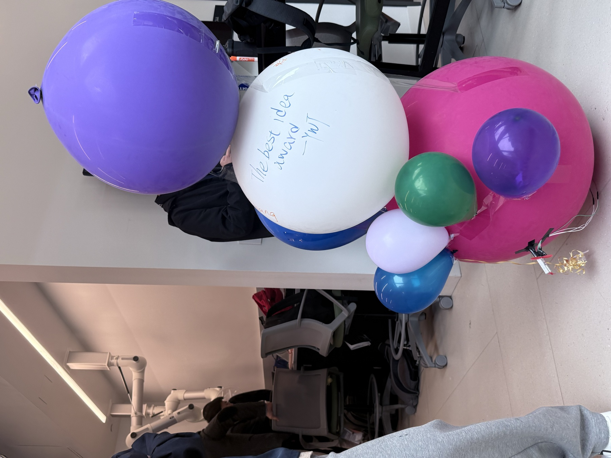
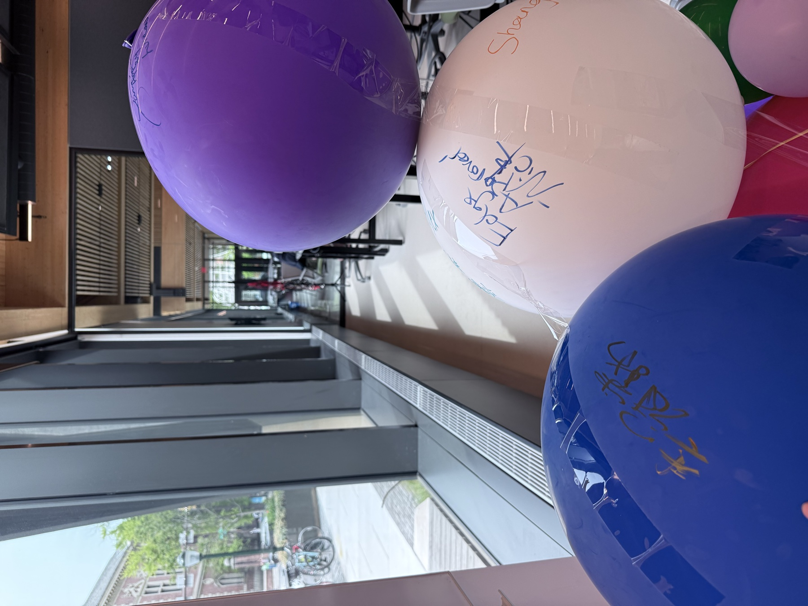
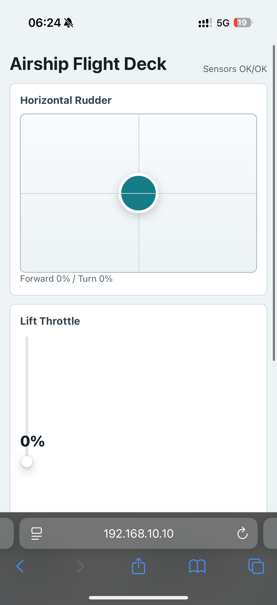
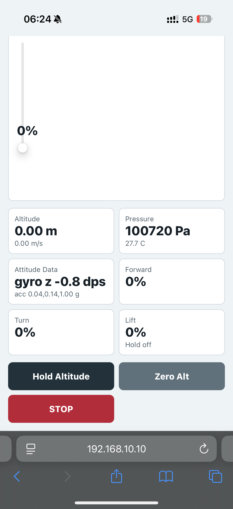
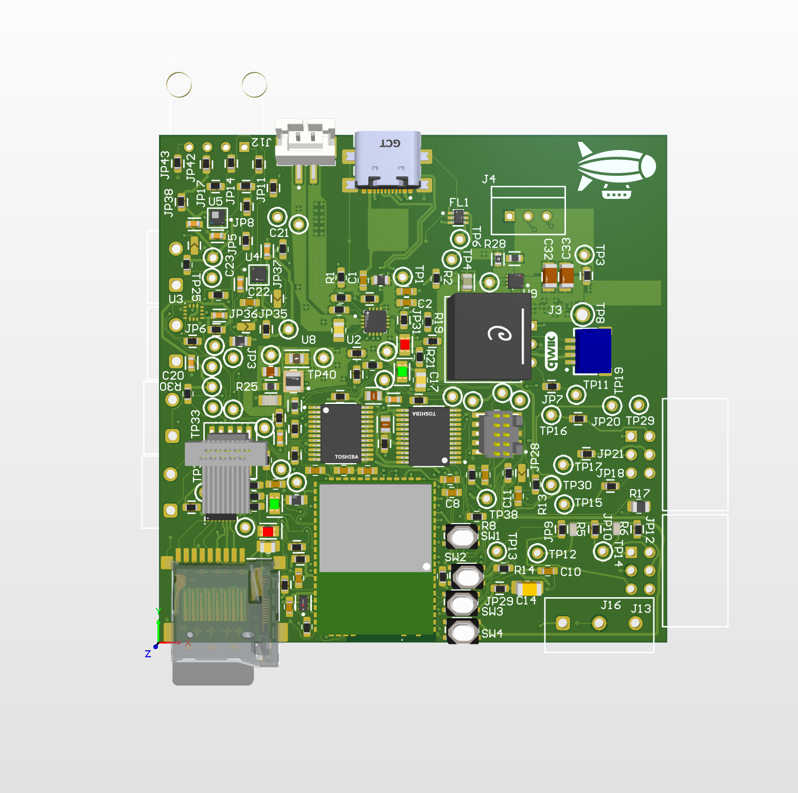
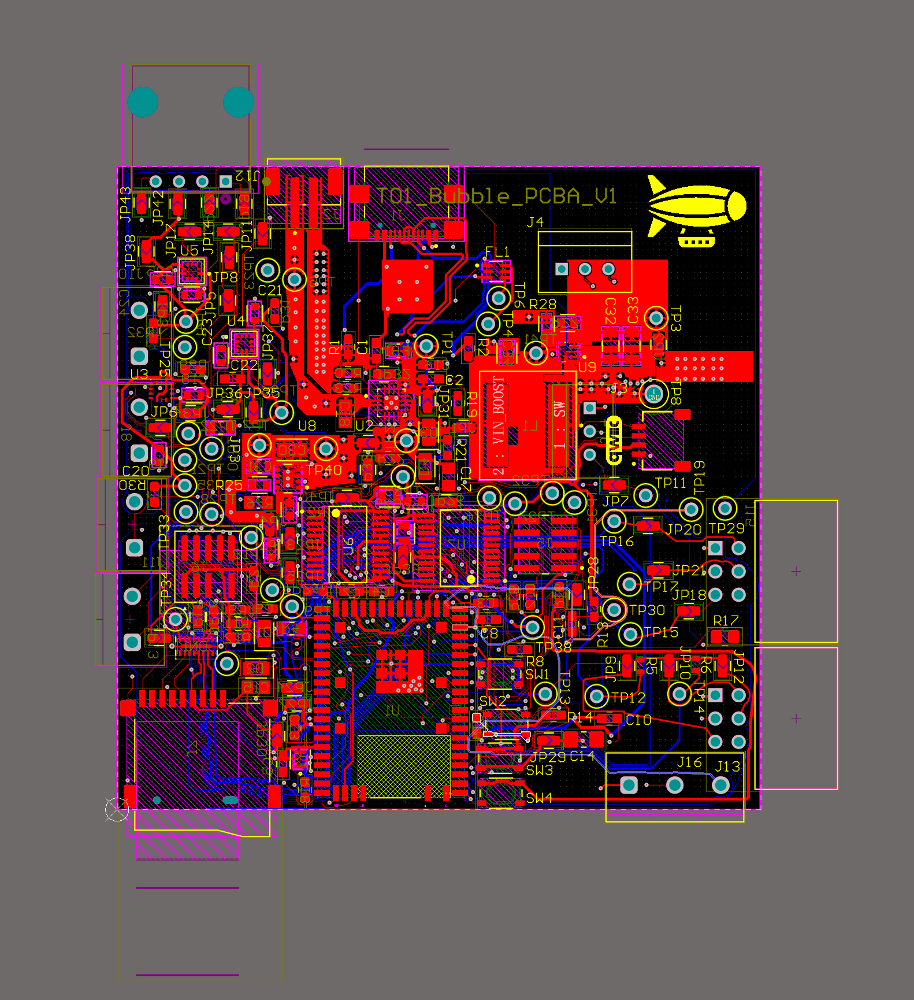
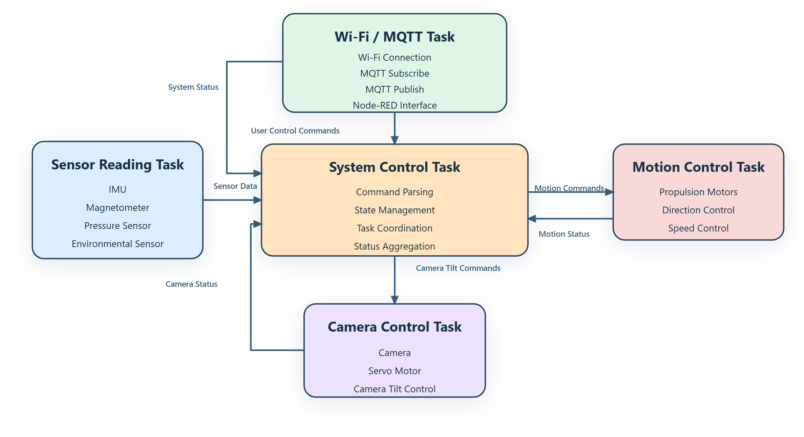

Video Presentation
Video checklist
Include the team number, team name, and members. Demonstrate the complete tumbler prototype, phone connection to the MCU Wi-Fi network, HTTP motor control, live sensor values on the page, and the motor responses: clockwise, counterclockwise, forward swing, and backward swing.
Also briefly explain the pivot away from the airship plan and show any remaining OTA firmware evidence if available.
Project Summary
Device description
Team Bubble's final device is a self-balancing tumbler-style prototype that uses motion and pressure data to observe its movement state and drive motors for physical response. The device creates its own Wi-Fi access point, so a phone can connect directly and control the motors through a browser-based HTTP page.
The final prototype solves a practical integration problem: bringing sensors, wireless networking, real-time motor outputs, and a mobile control surface together on the custom embedded platform.
Internet-connected behavior
The final control path is MCU-hosted Wi-Fi and HTTP, not Node-RED/MQTT. The SiWG917 starts a SoftAP named Airship-917, runs a BSD socket web server on port 8080, serves the control page, accepts motor commands through /cmd?m=&s=, and returns live JSON telemetry through /state.
This keeps the interaction local and phone-friendly: connect to the device Wi-Fi, open the printed HTTP address, then command the motors and observe sensor values from the same page.
Why the project changed from Airship
The original concept was a custom airship with a shaped balloon. The custom balloon option cost roughly $500, so the team tried lower-cost party balloons and nitrogen instead. Those balloons inflated into irregular, cone-like shapes with an uneven center of mass and center of buoyancy, which made stable flight control impractical for the remaining project timeline. The team therefore pivoted to a tumbler-style controlled motion prototype that could still validate sensing, actuation, Wi-Fi control, and embedded integration.
Device Functionality
Firmware architecture
app.c initializes the motor driver, sensor task, control loop, and web server. airship_sensors.c runs a periodic sensor task that reads LSM6DSO and BMP390 over I2C and updates shared state. motor_test.c controls three motor channels with GPIO direction pins and PWM duty cycle. web_control.c starts SoftAP mode and serves the mobile HTTP interface.
Final control features
The final page supports manual motor control, stop, altitude zeroing, and a simple altitude-hold path for the third motor using pressure-derived altitude. Sensor state shown on the page includes IMU validity, barometer validity, altitude, vertical speed, pressure, temperature, acceleration, gyro Z, hold state, and lift output.
Hardware & Software Requirements Review
The table below reviews the final project against the earlier Airship requirements and the code that was actually burned to the board. Items tied to MQTT, Node-RED control, camera, servo tilt, and cloud OTA are marked honestly because the final implementation uses local Wi-Fi and HTTP instead.
Hardware requirements
| ID | Requirement | Status | Validation / Evidence |
|---|---|---|---|
| HRS-1 | Use a SiWG917-family MCU for sensing, wireless communication, and actuator control. | Met | The final burned project is sl_si91x_i2c_driver_leader on the SiWG917 dev platform. Firmware initializes I2C, PWM/GPIO motors, and Wi-Fi SoftAP. |
| HRS-2 | Support Wi-Fi connectivity for remote control. | Met | web_control.c starts SoftAP SSID Airship-917 and hosts HTTP on port 8080. |
| HRS-3 | Include an IMU for motion/orientation information. | Met | airship_sensors.c probes LSM6DSO at 0x6A/0x6B and reads accelerometer and gyroscope data. |
| HRS-4 | Include a pressure sensor to estimate altitude. | Met | BMP390 is initialized at 0x76/0x77; pressure is compensated and converted into relative altitude. |
| HRS-5 | Include environmental sensing. | Partial | The final code reports BMP390 temperature and pressure. Earlier BME680 environmental work existed, but the final burned project uses BMP390 rather than full humidity/gas sensing. |
| HRS-6 | Include a camera for remote visual monitoring. | Not met | Camera integration was removed from the final path after the airship pivot. |
| HRS-7 | Include motors for movement control. | Met | motor_test.c implements three motor channels with direction GPIO and PWM output. |
| HRS-8 | Include a servo motor for camera tilt. | Not met | No final camera-tilt servo path is used in the burned project. |
| HRS-9 | Include a speaker for audio output or alerts. | Not met | Speaker output was not included in the final prototype. |
| HRS-10 | Support OTA firmware update through a cloud-hosted image. | Partial | OTA was explored in earlier assignment work, but the final demonstrated control firmware is the I2C/HTTP project and should only be claimed if the final video shows OTA evidence. |
Software requirements
| ID | Requirement | Status | Validation / Evidence |
|---|---|---|---|
| SRS-1 | Initialize and manage sensing, actuation, and communication peripherals. | Met | app_init() starts motors, sensor/control logic, and web control. |
| SRS-2 | Connect the device to Wi-Fi during startup. | Met | The final firmware starts its own SoftAP, allowing a phone to connect directly. |
| SRS-3 | Support MQTT communication between the device and cloud. | Not met in final firmware | The final burned project uses HTTP requests and JSON responses instead of MQTT. |
| SRS-4 | Subscribe to airship/control/motion and parse JSON motion commands. | Not met in final firmware | Motion control uses /cmd?m=&s= HTTP query parameters, not MQTT JSON. |
| SRS-5 | Subscribe to camera tilt commands. | Not met | Camera tilt was not part of the final prototype. |
| SRS-6 | Control motion motors according to received commands. | Met | HTTP commands call motor_test_set_signed_speed() for the selected motor. |
| SRS-7 | Control camera tilt servo according to angle commands. | Not met | No final servo tilt command path is present. |
| SRS-8 | Publish system status information. | Partial | Status is not published by MQTT, but it is exposed as JSON through the HTTP /state endpoint. |
| SRS-9 | Status data should include motion, speed, camera angle, and connection state. | Partial | The final JSON includes sensor validity, altitude, vertical speed, pressure, temperature, acceleration, gyro Z, hold state, target altitude, and lift output. It does not include camera angle. |
| SRS-10 | Support OTA firmware update using a cloud-hosted image. | Partial | Keep as partial unless the final video includes the earlier OTA demonstration and clearly explains it is separate from the final HTTP control firmware. |
| SRS-11 | Use multiple threads/tasks. | Met | The firmware creates a sensor task and a web server task with CMSIS-RTOS2/FreeRTOS. |
| SRS-12 | Use shared variables, queues, or event flags for inter-task communication. | Met | The sensor, control, and HTTP paths share structured state through airship_sensor_state_t and airship_control_state_t. |
| SRS-13 | Transmit live camera feed separately from MQTT. | Not met | Camera streaming was not implemented in the final prototype. |
Project Photos & Screenshots



192.168.10.10. The page shows altitude, pressure, temperature, IMU data, motor output, and control buttons.



Codebase
Final embedded C firmware
Important files: app.c, airship_sensors.c, airship_control.c, motor_test.c, and web_control.c. The directory name and some symbols still say "airship" because the project began as an airship; the final behavior is the tumbler/HTTP control prototype described here.
Node-RED / other software
Node-RED was used in earlier course work, but it is not the final motor-control or sensor-transport path. The final device dashboard is hosted directly by the MCU over HTTP.
Project Links
A11G submission repository: github.com/ese5160/a11g-final-submission-s26-s26-t01-bubble
Final firmware: sl_si91x_i2c_driver_leader
Final demo video: YouTube Shorts demo
Next Steps
Mechanical work should focus on a repeatable body shape and motor mounting so sensor feedback maps cleanly to movement. Firmware improvements would include renaming the remaining airship symbols, adding closed-loop balancing behavior from the IMU, securing the SoftAP or adding station mode, and producing a cleaner final telemetry log for validation.
The biggest course takeaway was that IoT edge systems fail or succeed at integration boundaries: sensor validity, actuator wiring, real-time timing, networking assumptions, and mechanical feasibility all have to be tested together.